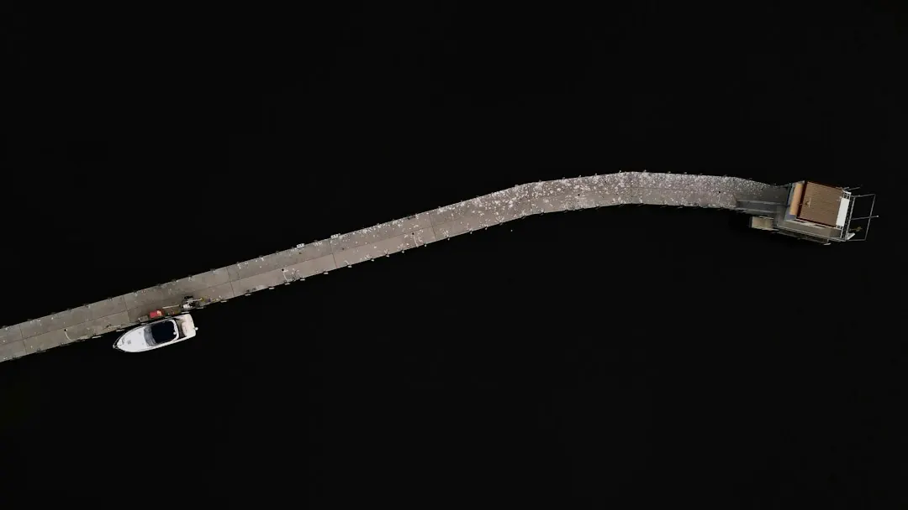

For homeowners comparing residential gutter cleaning perth options, the practical decision is when to book, what the visit should include and which roof details affect access.
Residential Gutter Cleaning Perth Explained
The first useful question is seasonal. Gutter Cleaning Perth identifies the weeks ahead of winter's first storms as the best time for many homes, once summer's sand and leaf drop has settled. That timing gives the roof drainage path a clear starting point before heavier rain arrives.
A yearly clean suits most homes, but the roof setting still matters. Gutters beneath overhanging trees can fill faster than gutters on an open roof. A homeowner requesting a quote should mention nearby trees, the last time the gutters were cleared and whether the house is single or double storey.
Perth's summer conditions also make dry debris worth discussing before fire season. The published guidance from Gutter Cleaning Perth refers to the WA Department of Fire and Emergency Services recommendation, reported by The Quote Yard, to clear gutters as part of bushfire preparation. The practical action is to ask when dry leaves should be removed and whether all roof-line gutters will be checked.
What a complete visit should cover
Rainwater follows a continuous route from the roof edge through the gutter and down the downpipe to the ground. A useful clean therefore deals with more than visible leaves at the front edge. The stated scope includes leaves, sand, weeds, bird nests and other debris in the gutters, followed by downpipe flushing or checking.
Debris can pack down after wind and then restrict the next heavy shower. Clearing from the downpipe outlet toward the closed end of the gutter helps lift material out rather than pushing it further into the pipe and stormwater connection. The yard should also be left tidy, with leaves, sludge and debris collected and taken away.
- Ask whether gutters and downpipes are both included.
- Confirm whether wet sludge, sand and bird nests are within the quoted scope.
- Check how removed material will be collected and disposed of.
Roof and gutter cleaning may be a broader one-visit option where moss and dirt also need washing from the roof. Gutter vacuum cleaning uses suction for wet sludge and dry leaves. These are different approaches, so the right choice depends on the debris and the roof condition described before work begins.
Choosing the right approach for the property
The property, not just the amount of visible debris, should guide the booking. A straightforward residential clean may suit a low, accessible roof. A double-storey or steep roof needs a provider that can explain the access method and equipment before anyone climbs a ladder.
Gutter guard installation is a separate consideration. It is intended to keep leaves and debris out for longer, but it does not change the need to understand the existing roof line, gutter condition and downpipe flow. Ask whether the proposed guard is appropriate for the roof and whether the gutters will be cleared before fitting.
Commercial and strata sites bring a different inspection context because the gutters and roofs may be on offices, warehouses, industrial sites or strata complexes. The quote should identify the areas included, access arrangements and how debris removal will be handled. A homeowner should not assume that a residential scope automatically applies to a larger or shared property.
Access, height work and repair boundaries
Single-storey and double-storey homes should not be treated as the same job. The quoted work can be shaped by storey count, roof pitch and the amount of debris. Double-storey and steep roofs are described as requiring harnesses, height-rated gear and fall protection, so those details belong in the conversation before the appointment.
Cleaning and plumbing repair are separate tasks. If the stormwater connection needs repair, the work goes to a licensed plumber, who issues a Certificate of Compliance. Ask the cleaner to identify any suspected connection problem rather than treating a blocked or damaged stormwater line as part of ordinary debris removal.
A clear quote should be set for the roof before work starts. Useful details to provide include the home's storey count, roof pitch, last cleaning date, nearby trees, access constraints and the likely debris load. That information helps establish whether the quoted scope includes vacuuming, downpipe checks, roof washing, guard installation or only the basic gutter clean.
Who this guide applies to
This guide is for Perth homeowners and property managers deciding whether a residential roof needs seasonal gutter work, a vacuum-based clean, height-access cleaning or a separate repair assessment. It is also relevant to people arranging work around Northbridge, West Perth, Highgate, South Perth, North Perth, Leederville, West Leederville, Mount Lawley, Subiaco, Victoria Park, Kensington, Menora, Maylands, Lathlain or Shenton Park, where the same questions about roof form, debris and access still need answers.
It is less suitable as a substitute for a plumbing diagnosis. Water overflow can begin with leaves and sand blocking the gutter, but a stormwater connection repair is a different job. The next step is to describe the roof accurately, request the scope in writing and ask which items are included before approving the visit.
- Give the suburb or postcode if requested, plus the property storey count.
- State when the gutters were last cleared and whether trees overhang the roof.
- Ask how downpipes will be checked and whether debris removal is included.
- Separate cleaning questions from any suspected stormwater repair.
- Describe the roof. State whether the home is single or double storey, note the roof pitch and identify any access issue.
- Explain the debris. Mention the last clean, nearby overhanging trees and whether the gutters contain leaves, sand, sludge, weeds or nests.
- Confirm the scope. Ask whether gutters, downpipes, vacuuming, roof washing, guard installation and debris removal are included.
- Separate repairs. Treat a stormwater connection problem as plumbing work and ask for the relevant licensed trade assessment.
| Situation | Likely focus | Question to ask |
|---|---|---|
| Accessible residential roof | Gutters, downpipes and debris removal | Are all downpipes included in the quoted clean? |
| Wet sludge or dry leaves | Gutter vacuum cleaning | Will suction be used for the debris present? |
| Double-storey or steep roof | Harnesses, height-rated gear and fall protection | What access and fall-protection method will be used? |
| Moss or dirt on the roof | Roof and gutter cleaning | Does the visit include roof washing as well as gutters? |
| Stormwater connection concern | Separate licensed plumbing work | Will a licensed plumber assess and certify the repair? |
This guide covers seasonal gutter cleaning decisions, quoted scope, roof access, debris removal and the boundary between cleaning and plumbing repair.